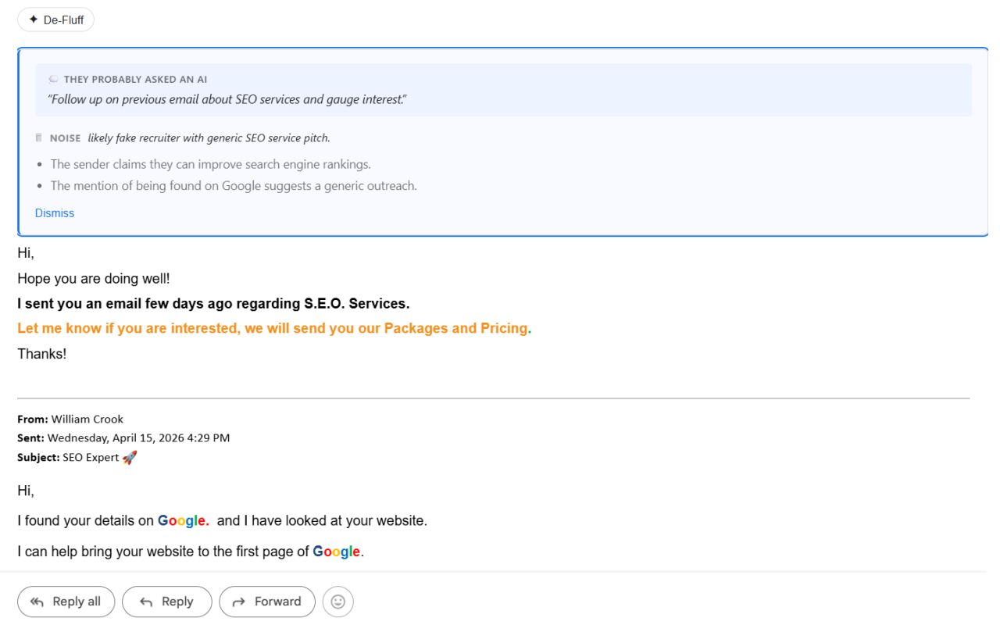

I hope this email finds you well.
One-click extension for Gmail, Outlook, and LinkedIn. Detects whether a message was written by AI, polished by AI, or by a human — then extracts 3–5 bullets of what the sender actually wants, in the email's own language. Zero servers. Your keys, your models, your data.
Free, forever. MIT-licensed, BYOK, zero retention — built for the vibe-coding community.
Chrome Web Store submission is in review — until it's approved, install from source with the steps below. Firefox and Edge mirrors follow Chrome approval.
git clone https://github.com/FinAegis/defluff.git && cd defluffpnpm install && pnpm --filter @defluff/extension buildchrome://extensions, enable Developer mode, click Load unpacked, and select apps/extension/dist.Edge: same flow at edge://extensions. Firefox temporary install: about:debugging → This Firefox → Load Temporary Add-on → pick apps/extension/dist/manifest.json.

§01 · How it works
Three steps, about sixty seconds to set up. No account.
One extension for Chrome, Edge, and Firefox. It adds a De-Fluff button to Gmail threads and LinkedIn messages.
Pick a provider — Anthropic, OpenAI, Gemini, or your own Ollama. Paste the API key you already have. It never leaves your browser.
The email collapses into an authorship badge (Written by AI, AI-polished, or Human-written), a verdict (ACTIONABLE / RESPONSE-NEEDED / FYI / NOISE), and 3–5 bullets of real intent — all in the email's own language. When AI wrote it, you also see the prompt behind it.
§02 · Where it works
Primary targets are Gmail and LinkedIn Messaging. Outlook Web is supported. The Office.js desktop add-in is available as a preview.
The De-Fluff button appears above each expanded message.
Granted on demand from the options page. Only appears on messages over 400 characters.
All four Microsoft Outlook Web origins, including the new outlook.cloud.microsoft tenant.
Office.js add-in for Outlook on Windows / Mac. Sideload manifest.xml — works, but less polished than the web extension.
§03 · Agent surfaces
Defluff ships as a Claude Code plugin (via the FinAegis marketplace) and as a ClawHub skill for OpenClaw. Install once, paste any email, get the same 3–5 bullet output — same reversal logic, same verdict format as the browser extension.
Claude Code runs the skill locally on your machine against your Anthropic subscription — same privacy shape as the extension. claude.ai and the Claude API (if you install the skill there) run it in Anthropic's sandbox and are not covered by zero data retention; reach for the extension instead if that matters.
§04 · Privacy
Defluff has no backend. Your email content and your API key never leave your browser for infrastructure we run. Not a policy — the architecture.
| Defluff | Shortwave | Superhuman AI | Grammarly | |
|---|---|---|---|---|
| Your email reaches their servers | Never | Yes | Yes | Yes |
| Stores your content | Never | Yes | Yes | Yes |
| Needs an account | No | Yes | Yes | Yes |
| Cost per month | $0* | $12 | $40 | $12 |
| Open source | Yes | No | No | No |
| Works with local models | Yes (Ollama) | No | No | No |
* Plus what you pay your chosen LLM provider — typically under $1/month on Claude Haiku or GPT-4o mini, $0 on Ollama.
§05 · Proof points
Audit the whole thing over coffee. Around two thousand lines of TypeScript.
No analytics, no crash reports, no usage SDKs in the bundle.
Gmail, Outlook, and LinkedIn — nothing else. Never <all_urls>.
See SECURITY.md for what the product doesn't try to defend against.